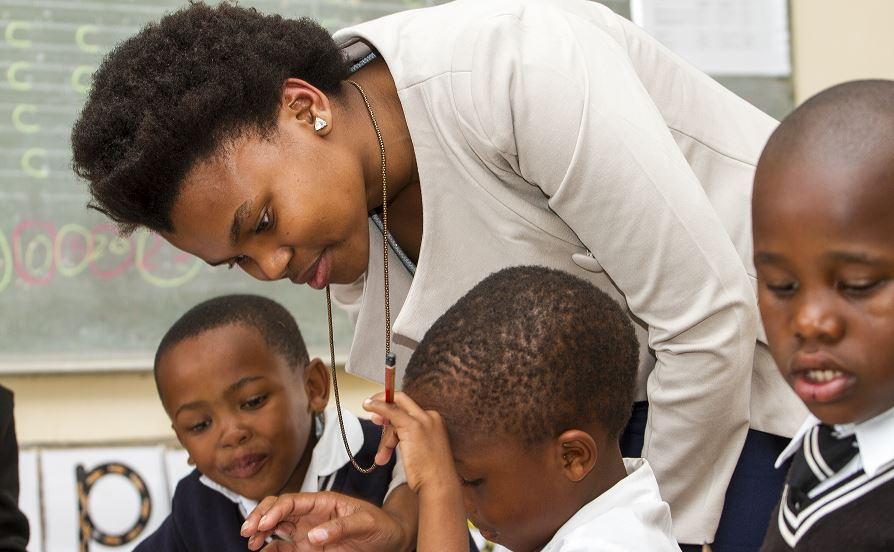
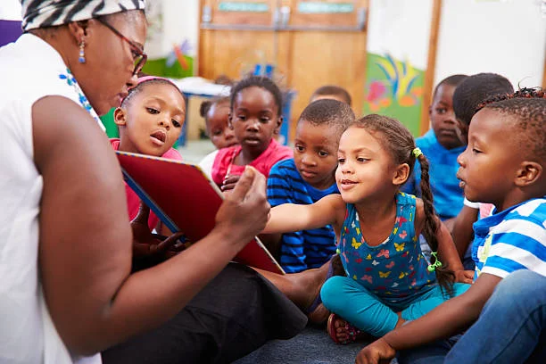
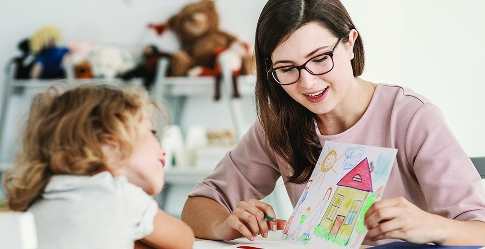
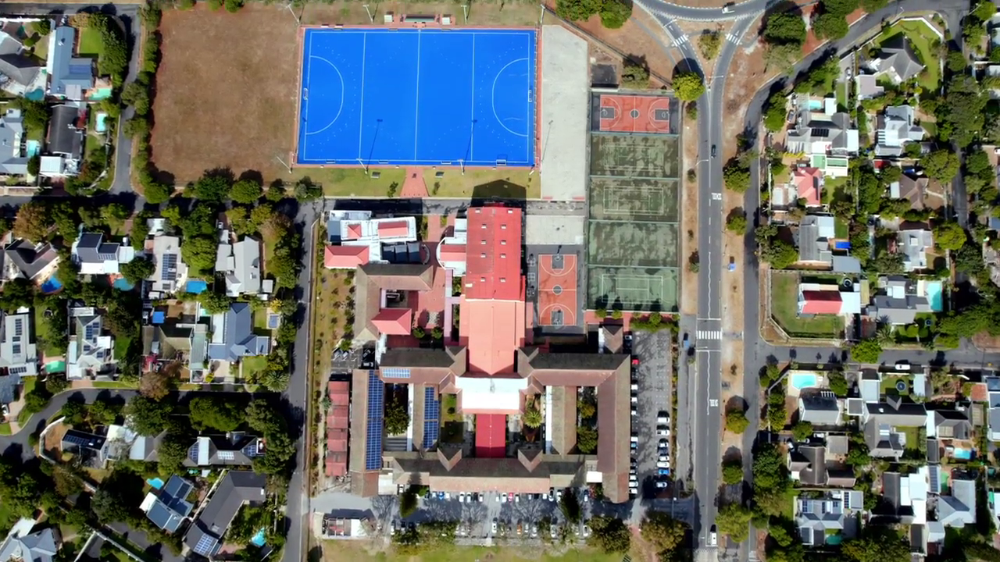
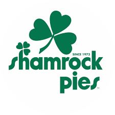

Our Mission
Our mission at VP Primary School is to create a safe, inclusive, and inspiring learning environment where every learner is empowered to reach their full potential. We are committed to delivering high-quality education through dedicated teaching, innovative learning strategies, and strong community partnerships. By fostering discipline, integrity, leadership, and respect, we aim to develop confident individuals who are prepared to contribute positively to society and succeed in an ever-changing world.



Academic Excellence
Structured programs designed to build strong academic foundations.


Sports & Physical Development
Encouraging teamwork, fitness, and competitive spirit.



Learner Support
A safe and supportive environment for every learner.



Our Story
Founded in 1998, VP Primary School began with a simple vision: to provide quality education in a safe and nurturing environment.
Over the years, we have grown into a respected institution known for academic excellence, discipline, and strong community values.
Today, we continue to inspire learners to become confident, responsible, and future-ready leaders.
Learning at VP Primary
Our curriculum develops confident and capable learners using structured academic programs and modern teaching methods.
- ✔ Strong literacy and numeracy foundation
- ✔ Technology-integrated classrooms
- ✔ Critical thinking development
- ✔ Holistic learner support


Our Sponsors & Partners
We proudly collaborate with organizations that support education, development, and community growth.

